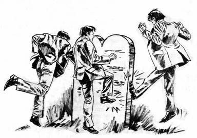

The Good News in the Bible
| Romans 14 and "Regarding All Days Alike" William Diehl Many of my friends whom I have known ever since I first became a Sabbath-keeping evangelical Christian have given up the observance of the fourth commandment. When I ask them why they feel that the observance of the fourth commandment is not enjoined upon Christians, nearly every one quotes me the same text from Paul's epistle to the Romans. Romans 14:5-6 "One person thinks that a certain day is more important than other days, while someone else thinks that all days are the same. Each one should firmly make up his own mind."
Only if one ignores the historical context of chapter 14 can one reach this mistaken conclusion. Please read chapter 14 given here:
This entire fourteenth chapter of the epistle to the Romans records Paul's counsel on how to deal with new Christian converts who are offended by eating food and wine offerings offered to pagan gods as if eating this food would be a denial of the Faith and an act of participating in idol worship should they partake of this food. Some of these "weaker brethren" even believed that to observe certain fast days wherein this food is entirely left out of the diet was pleasing to Christ and mandatory as a "way to honor the Lord".
To show that these fast days are really what "days" Paul had in mind, look at verse 6. Here Paul places the observance of a certain day in opposition to the freedom to "eat anything". "Whoever thinks highly of a certain day does so in honor of the Lord: whoever will eat anything does so in honor of the Lord, because he gives thanks to God for the food. Whoever refuses to eat certain things does so in honor of the Lord and he gives thanks to God."
So we see that some will not eat the food and do "observe the day", while on the other hand some will eat the food and do not "observe the day" Thus if we keep these "days" in their context (days of eating or not eating: fasting or not fasting) we see that the apostle Paul is not referring at all to the observance of the seventh day Sabbath as being optional or a matter of choice, but rather he is referring to observance of optional fast days. This issue was one which was vexing the entire early Christian church including the church at Corinth. When one compares Paul's counsel to the Corinthians with his counsel to the Romans then the context is obvious.
It is interesting to also note that the Didache, a very early second century Christian catechism, mentions the fact that there were factions in the early Christian church which were advocating certain fast days and that there was a dispute as to which days of the week to observe as a fast days. If you will read through this brief catechism and note especially where the text is in bold text, you will see that not only were these fast days mentioned but as an aside I would call your attention to the fact that the "preparation day" is mentioned as being one of these fast days. The "preparation day" is the sixth day of the week and is the day which is mentioned in the new testament as the day preceding the Sabbath day.
Also note that the believers are urged in the Didache to gather on "the "Lord's own day" (see near the end of the document in bold text). The day of the week here mentioned as "the Lord's own day" is obviously the seventh day Sabbath. We can know this because "the preparation day", the sixth day of the week, was the day to prepare for the blessing of the seventh day Sabbath rest. These texts in the Didache give us some very important insight as to the fact that "the Lord's own day" was the seventh day Sabbath which was being observed by the very early Christian church. The early church was indeed observing the Sabbath day of the fourth commandment.
And so with the proper understanding of Paul's counsel in Romans 14 in its textual context and historical context, we are able to see that the integrity of all of God's commandments are maintained. As Paul tells us in Romans 7:12 "So then, the Law itself is holy, and the commandment is holy, right, and good." Paul was a Sabbath keeper, the early church was observing the Sabbath, and even the apostle John observed "the Lord's day", (see Revelation 1:7—"I was in the spirit on the Lord's day"). The seventh day of the week is the day sanctified by the Lord for the believers to come together for common worship and the hearing of the good news that our Lord by His unmerited grace alone saves to the uttermost those repentant sinners who put their faith and trust in the sinless life and atoning death of Christ alone as revealed in the Bible alone. Our Lord Jesus Christ "hung alone that He might atone" for our transgressions of not only the letter of the Law, but our transgressions of the spirit of the Law as well. The "blood of sprinkling" in the Day of Atonement tabernacle ritual was always applied and atonement always took place at the mercy seat above the holy Law of God. Our Lord Jesus Christ is now the mediator of a new and better covenant based upon better promises. He himself as our High Priest, King, and Judge is the Law-giver and the Law-keeper for all who put their trust in his perfect life and atoning death. Those who trust in him as Savior and Lord will be walking in the way of his commandments not to be justified but because they are justified by faith in his perfect obedience to all of the holy commandments. Or to put it in the words of Paul in Romans 3:31 NIV "Do we, then, nullify the law by this faith? Not at all! Rather, we uphold the law." Note:
Notice that Paul, after preaching all night, left on SUNDAY morning for his journey. He and the believers DID NOT then have a Sunday morning church service. The first day of the week was of no religious significance to the first century church: see "Sunday and the Early Church".
|